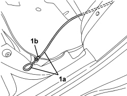

7015B45 EMERGENCY CONTROL FOR OPENING TAILGATE - R.R.
- Path
- Procedures > 70 FITTINGS > 7015 TAILGATE/FLAP > 7015B TAILGATE CLOSING/OPENING DEVICES > 7015B45 EMERGENCY CONTROL FOR OPENING TAILGATE - R.R.
- Kind
- repair procedure (removal / refitting; the operation number is the code)
- Applies to
- all engines; all production periods
- Interactive page
- https://sloeber94.github.io/elrnDB/alfa/159/en/#/939005447
Applies to: all engines; all production periods; only with equipment: Station Wagon
 Removing
Removing
 Refitting
RefittingOp. 7040B22 LUGGAGE COMPARTMENT/LOAD PLATFORM MOULDING - R+R
- Work on the left side.
Op. 7040G40 LOAD COMPARTMENT LIGHT BULB HOLDER - R R
Op. 7040B04 SIDE MOULDING (ONE) LH OR RH FOR LUGGAGE COMPARTMENT - R.R.
Op. 7040B10 LOAD PLATFORM (LUGGAGE PLATFORM) TRIM - R+R
Op. 7040B18 LOAD COMPARTMENT LOAD PLATFORM SIDE TRIM ONE LH OR RH - R.R
- Raise the rear seat left cushion.
1. Loosen the bolts fixing the tailgate lock striker.
2. Move the striker (2a) and disconnect the emergency opening rod (2b) releasing the retainers (2c).
3. Partly detach the adhesive protection to release the emergency control.
4. Disconnect the emergency control from the intermediate retainers.

Applies to: all engines; all production periods; only with equipment: Station Wagon
1. working in the area of the rear seat left cushion, disconnect emergency control (1a) from retainer (1b) and recover.

Applies to: all engines; all production periods; only with equipment: Station Wagon
Refitting
Removing- Check that the emergency control is not damaged.
- Place the emergency cover in position.
- Working in area of the rear seat left cushion, connect the emergency control to the retainer.
- Connect the emergency control to the intermediate retainers.
- Position and bond the adhesive protection securing the emergency control.
- Connect the emergency control to the tailgate lock striker retainers.
- Position the tailgate lock striker and screw in the fixing bolts without tightening them.
Op. 7040B18 LOAD COMPARTMENT LOAD PLATFORM SIDE TRIM ONE LH OR RH - R.R
Op. 7040B10 LOAD PLATFORM (LUGGAGE PLATFORM) TRIM - R+R
Op. 7040B04 SIDE MOULDING (ONE) LH OR RH FOR LUGGAGE COMPARTMENT - R.R.
Op. 7040G40 LOAD COMPARTMENT LIGHT BULB HOLDER - R R
Op. 7040B22 LUGGAGE COMPARTMENT/LOAD PLATFORM MOULDING - R+R
Op. 7015A10 TAILGATE - ADJUST STRIKER AND ADAPT SEAL IF NECESSARY
- Check the operation of the tailgate emergency opening control
- Lower the rear seat left cushion.
Topics linked from this page (6)
- 7015A10 TAILGATE - ADJUST STRIKER AND ADAPT SEAL IF NECESSARY
- 7040B04 SIDE MOULDING (ONE) LH OR RH FOR LUGGAGE COMPARTMENT - R.R.
- 7040B10 LOAD PLATFORM (LUGGAGE PLATFORM) TRIM - R+R
- 7040B18 LOAD COMPARTMENT LOAD PLATFORM SIDE TRIM ONE LH OR RH - R.R
- 7040B22 LUGGAGE COMPARTMENT/LOAD PLATFORM MOULDING - R+R
- 7040G40 LOAD COMPARTMENT LIGHT BULB HOLDER - R R